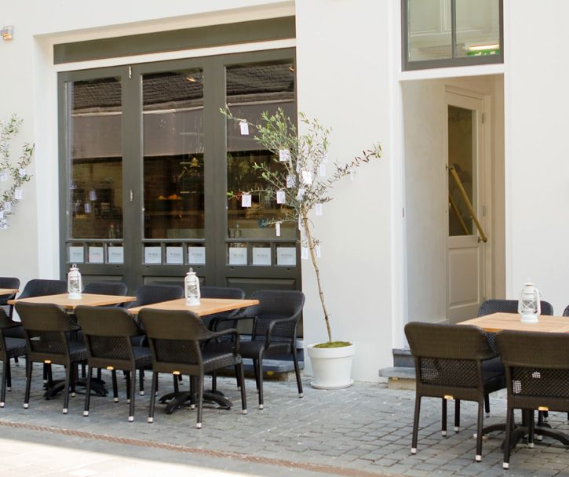
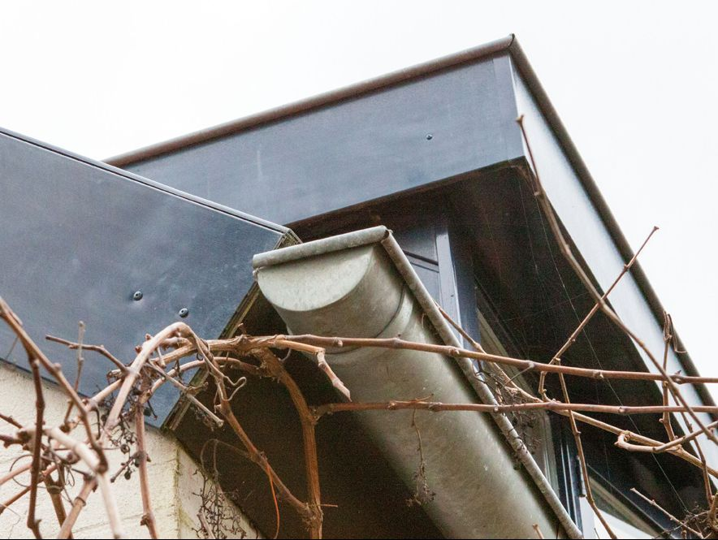

Hoofdzakelijk voor particuliere klanten in en om Breda. We leveren alles altijd strak en netjes af.
De complete verbouwing van uw huis begint bij eerlijk advies en goede begeleiding. We maken samen een stappenplan dat past bij uw huis.
Extra ruimte, met aandacht voor uw tijd en budget en voor de praktische mogelijkheden en beperkingen. Uitgevoerd in metselwerk of houtskeletbouw, met lichtkoepels of een lichtstraat.
Een oude boerderij, een pand uit de jaren '20 of een ander gebouw dat de moeite waard is. Duurzamer, met minder energieverbruik en meer onderhoudsvriendelijk.
Een kozijn vernieuwen, laminaat leggen of een tochtgat dichten. Ook voor de kleinere klusjes bent u bij ons aan het juiste adres.
Een zitplek in de tuin, een tuinschuurtje, schuttingen, carports of het monteren van trespa en keralit plaatmateriaal.
Sfeervolle zolderetages met een dakkapel, gecombineerd met het isoleren en stuken van het dak.
Woonhuizen, woonboten, vakantiehuisjes, geluidsstudio's: een greep uit de projecten van WalVis.



